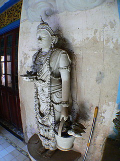

AugurakaraMullsHighTemple/Negombo
スリランカ仏教最前線、最初に訪れたのは空港にも程近いニゴンボのAugurakaraMullsHighTemple（スリランカのお寺は冗談かと思うほど名前が長いゆえ日本語表記はめんどくさいので省略させてもらいます）。
実はこの辺はキリスト教会が多く、仏教はあまり盛んな印象を受けなかった。実際、コロンボやニゴンボといったエリアは仏教徒とキリスト教徒とヒンズー教徒の割合が同じ位だという。また、この近所には立派なモスクがあり、たくさんのイスラム教徒が集まっていた。
そんな中、いきなりアグレッシブな形状の大仏さんが現れる。
ただ、境内には近所の家族連れしかおらず、ガラ〜ンとしていたが。
大仏さん自体は10メートルあるかないか、というサイズだが、大仏さんの下にある大きく口を開けた獅子と周りを覆う派手な建物に目が釘付け。
どうやら獅子の口が入り口になっているようだ。
そして大仏さんを覆う屋根の柱のデザインが凄すぎる。
タイルモザイクで埋め尽くされているのだが、青黄赤白の仏教カラーを基調とした派手な彩り。
2523という数字は仏暦2523年、つまり西暦1980年建造という意味。
積み木を積んだような柱は思わずハンマーでスコ〜ンっとダルマおとしをしたくなってしまうぞ。
年号の下に付いている象さんの鼻のような飾りもナゾだ。
この大仏さんを見ていただければ一目瞭然だがスリランカの仏像のほとんどがこの細かいヒダヒダにピッチリ衣装のスタイル。
日本で言うところの清涼寺様式だ。
何故スリランカ仏がこのスタイルがメインなのかは良くわからないが、現存する古代仏教の仏像なども座っていようが立っていようが寝ていようがほぼすべてこのヒダヒダピッチリのスタイルである。楠田枝理子女史がよく着てる三宅一生の服みたいですね。
初めてのスリランカ大仏エクスペリエンスにしばしうっとりしていると、獅子の口の中からお坊さんがおいでおいでしている。
では、中に入らせてもらいますか。
あっ、よく見たら獅子の口のすぐ脇に足がついてらあ〜。
で、獅子の口に飲み込まれ（っと、その前に靴を脱がなきゃですね）中に入る。
入ってすぐにはいきなり鬼がか弱いお嬢さんをツープラトンでいたぶりまくり。
おひょ〜、いきなり地獄ですかい。旦那。しかも鬼の耳やらお嬢さんの左手やらが真っ白に。
あっ、修復してるんですね。
っと、その奥に青いマツケン発見！
顔色が悪いぞ！ ♪お医者さんに行きましょ〜♪
ヒンズー寺院だけでなく、仏教でも青い人がいるんですね。
さっすが南アジアの仏教世界は奥深いですなあ〜。
入り口から入り、回廊を曲がるとそこには人の一生を描いた人生階段が。
生誕、子供、青年、結婚、出産と続き、その辺が人生のピークということなのだろうか。
続いてお父さん、おっさん、おじさん、ジイさん、お爺ちゃんと徐々に人生のステップを下り…
ついに入滅。
歳を重ねるごとに人生のステージが下がっていくという率直すぎる構成がやりきれなさを感じさせてくれる。
俺、頂点から1段下がったあたりだなあ〜、なんて。
ホントは歳を重ねるごとに魂のステージは上がっていくんだよ〜、と信じたいところだが、あたしゃスピリチュアルカウンセラーじゃないので良くわかりません。
で、結局一番のハイライトはこの辺↑、夫婦仲良く元気良く、あたりなのだそうで。
回廊はまだまだ続く。壁からこぼれ落ちてきそうな彫像が渦巻く空間。
この辺のこってり具合はさすがヒンズー教の影響を受けまくりの南アジアだなあ〜、と妙に感心する。
屋内の入り口アーチ上部のこの怪獣の口からお花の滝が駑馬駑馬〜というデザインは他の寺でも比較的良く見かけた。伝統的なデザインなのだろう。
チビッコも濃ゆ〜い空間創りに一役買ってます。
回廊から中の部屋に入ると、回廊に負けず劣らずの特濃空間。
壁画とレリーフと彫像が渾然一体となってギーたっぷりの脂っこい味付けが施されている。
梯子に乗る仏サマ。
この乗り方はチョット危ないのでは…
お隣は寝釈迦ルーム。大きな寝釈迦さんが気持ちよさそうにお休みになっておられる。
黄色い。まるでターメリックで染め上げたかのようにマッキッキ。
黄色い肌の仏像もこの国ではかなり見かけた。これもスリランカ仏の特徴といっていいだろう。
ついでにニスで仕上げたかのような妙なツヤもスリランカ仏の特徴として挙げておきたい。
再び回廊に出ると再び鬼が庶民をいじめているぞ。しかも仏さんの目の前で。いいのか。
そうこうしている内に回廊を回り終わって参拝終了。
最後までお坊さんが案内してくれたのだが、結局どこで参拝していいのか良くわからなかった。
それは「この寺の本尊はコレですよ！」みたいな中心性が感じられず、回廊の仏像も梯子に登った仏像も寝釈迦さんも同格の扱いを受けているような印象だったのだ。
だから日本や東南アジアのお寺に行ったときのように、何も考えず自然に本尊の前で手を合わせる参拝の一連の流れのようなものが感じられない。そんなところも何となくヒンズー寺院っぽい構成だったようにも思える。
仏教寺院なのに今一歩踏み込めない感があった。

作りかけの彫像。
プロのセメント職人が作るのではなく素人の信徒が作っているらしい。上手いっすね。
やっぱ一番手前のお坊さんは肌を青く塗ったりするんだろうか…